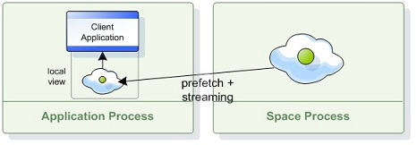

A Local View is a Client Side Cache that maintains a subset of the master space's data. The Local View allows the client to read distributed data without performing any remote calls.
Data is streamed into the client's local view based on predefined criteria (a collection of SQLQuery objects). These criteria are specified by the client when the local view is created.
During the local view initialization, data is loaded into the client's memory based on the view criteria. Afterwards, the local view is continuously updated by the master space asynchronously; any operation executed on the master space that affects an entry which matches the view criteria is automatically propagated to the client.

Creating a local view is similar to creating an ISpaceProxy instance, except the space should be wrapped with a local view before exposing it as an ISpaceProxy. The local view is configured in code using IReadOnlySpaceProxy. For example:
//define names for the localView
const String typeName1 = "com.gigaspaces.test.Alpha";
const String typeName2 = "com.gigaspaces.test.Bravo";
//Create an array of views and initialize them with
View[] views = new View[] { new View(typeName1, "foo=1"), new View(typeName2, "") };
//Create the local view using the GigaSpacesFactory class.
IReadOnlySpaceProxy localView = GigaSpacesFactory.CreateLocalView(proxy, views);
The Local View is a Read-Only data structure. The following operations are not supported when using local view, and should be performed using a regular space proxy:
Write, WriteMultiple, Execute).Clean, Clear, Take, TakeById, TakeMultiple, AsyncTake, etc.).Data is never evicted from the local view (the cache policy is hardwired to ALL_IN_CACHE). Therefore, specifying criteria that retrieves large amounts of data from the master space can cause the client to run out of memory.
As data is stored in the client application's memory, care must be taken to ensure that the application's memory is sufficient to maintain the data. Certain scenarios can result in a memory shortage. If you create multiple local views in the same client or your local view query is too broad, the application could run out of memory and the MemoryShortageException will be thrown.
To overcome this either refine the local view queries to cache less data or increase the underlying JVM's memory, as explained in JVM Configuration.
In most cases, the local view uses replication to synchronize with the master space. Replication provides high reliability and stability.
The local view reverts to notification-based synchronization, which is less reliable, when:
Changes in the server are grouped and sent to the client in batches. The following configuration settings control synchronization batching:
Setting lower values for batch size and timeout reduces data staleness but increases network load, and vice versa.
Batch settings can be configured when creating the Local View by defining a LocalViewConfig object and sending it as a variable in the GigaSpacesFactory.CreateLocalView function. For example:
//Create the configuration object
LocalViewConfig myconfig = new LocalViewConfig();
//set the batchSize property
myconfig.BatchSize = 2000;
//define the views for the local view
View[] views = new View[] { new View(typeName1, "foo=1"), new View(typeName2, "") };
//create the local view using the GigaSpacesFactory object and write it into an IReadOnlySpaceProxy object.
IReadOnlySpaceProxy localView = GigaSpacesFactory.CreateLocalView(proxy, views, myConfig);
When the connection between a local view and remote master space is disrupted, the local view starts trying to reconnect with the remote space.
If the disconnection duration exceeds the maximum disconnection duration, the local view enters a disconnected state, wherein each operation throws an exception stating the view is disconnected.
When the connection to the remote master space is restored, the local view reloads all its data from the master space (same as in the initialization process) before restoring the state to connected, ensuring the local view is consistent when it is accessed.
The maximum disconnection duration can be configured using LocalViewConfig object at runtime when creating the local view. (default is 1 minute). For example:
//Create the configuration object
LocalViewConfig myconfig = new LocalViewConfig();
//set the MaxDisconnectDuration property
myconfig.MaxDisconnectionDuration = 150;
//define the views for the local view
View[] views = new View[] { new View(typeName1, "foo=1"), new View(typeName2, "") };
//create the local view using the GigaSpacesFactory object and write it into an IReadOnlySpaceProxy object.
IReadOnlySpaceProxy localView = GigaSpacesFactory.CreateLocalView(proxy, views, myConfig);
This properties can be configured on the space side and they will affect all the local views which are created on top of that space.
| Property | Description | Default Value |
|---|---|---|
| cluster-config.groups.group.repl-policy.redo-log-local-view-capacity | Specifies the total capacity of replication packets the redo log can hold for a local view replication target | 150000 |
| cluster-config.groups.group.repl-policy.redo-log-local-view-recovery-capacity | Specifies the total capacity of replication packets the redo log can hold for a local view replication target while the local view is in recovery state (initial load process) | 1000000 |
| cluster-config.groups.group.repl-policy.local-view-max-disconnection-time | Specifies the maximum amount of time (in milliseconds) the space will wait for the local view replication target before it is considered disconnected, after which the target will be dropped. | 300000 |
When the synchronization is replication-based (default), the local view is resilient to failover, which means that if a primary space fails and a backup space replaces it within the maximum disconnection duration, the local view will remain intact during the failover process. When the synchronization is notification-based this is not guaranteed since notifications might be lost during the failover process.